S38 — Why Does Soda Fizz?
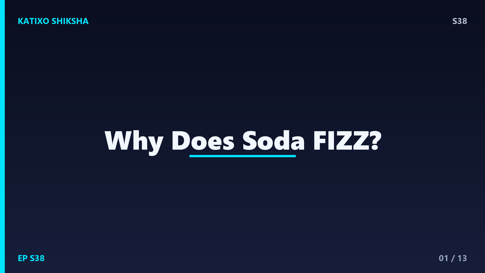
Slide 1दोस्तों, सोचो वो आवाज़, छस्स! जैसे ही तुम cold drink की बोतल या can खोलते हो, अंदर से बुलबुले उछल-उछल कर बाहर आने लगते हैं। कभी-कभी तो इतना झाग बनता है कि सब छलक जाता है! पर क्या तुमने कभी सोचा है, ये बुलबुले आख़िर आते कहाँ से हैं? बोतल बंद थी, तब तो कोई बुलबुला नहीं दिखता था। फिर खोलते ही ये कहाँ से प्रकट हो गए? आज Katixo KhojLab पर हम सुलझाएँगे इस fizz का पूरा राज़, और इसमें छुपी है pressure और gas की मज़ेदार science. चलो शुरू करते हैं!
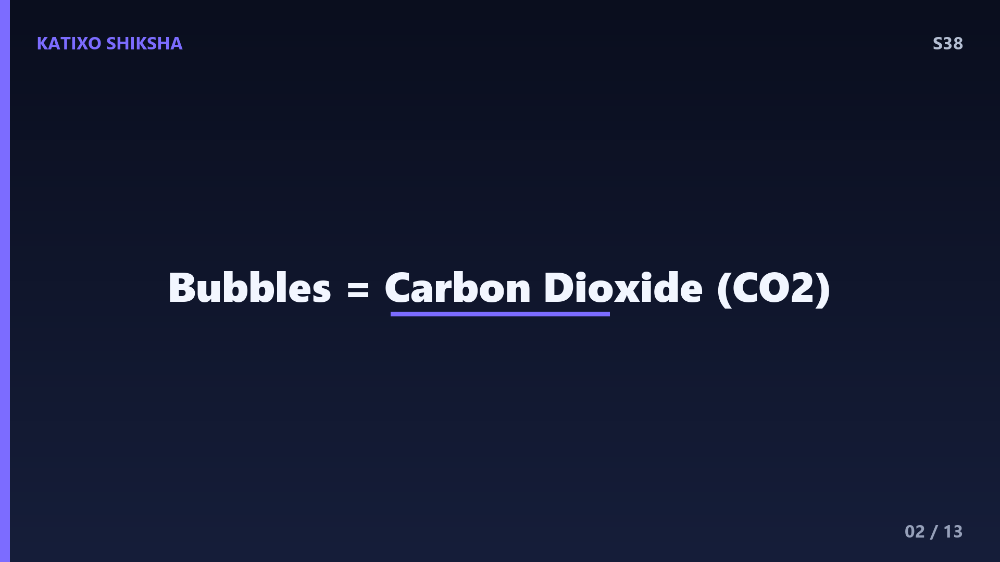
Slide 2सबसे पहले जानो कि soda में वो बुलबुले बनते किससे हैं। ये गैस है carbon dioxide, यानी CO2. यही वो गैस है जो हमारे fizz के लिए ज़िम्मेदार है। Factory में soda बनाते समय, drink में जान-बूझकर बहुत सारी CO2 गैस घोली जाती है। इस पूरी process को कहते हैं carbonation, यानी कार्बनीकरण। तो दोस्तों, soda असल में सिर्फ मीठा पानी नहीं है, बल्कि वो पानी है जिसमें ढेर सारी गैस छुपा कर रखी गई है। और यही छुपी हुई गैस ही बाद में बुलबुले बनकर बाहर निकलती है।
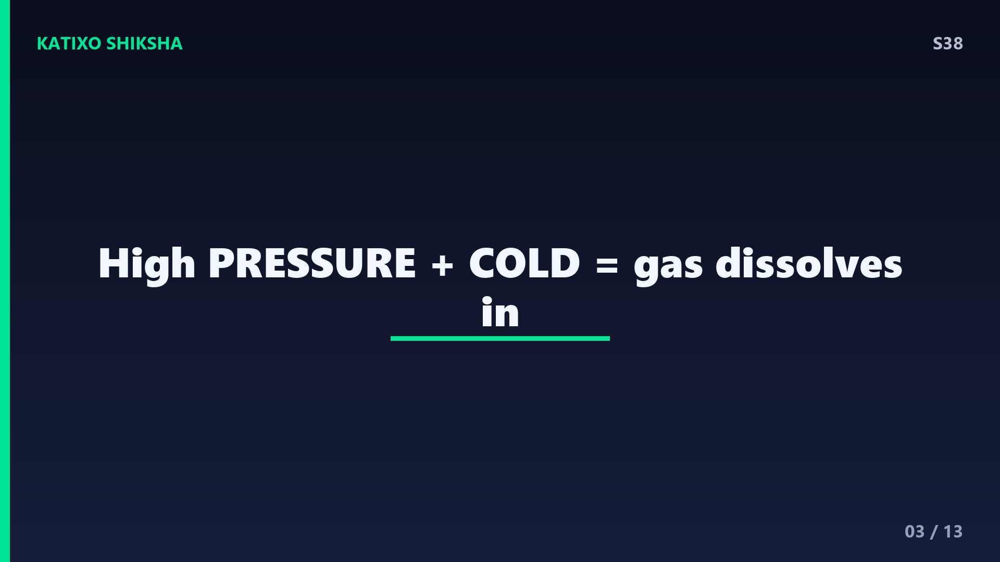
Slide 3अब सवाल ये है कि गैस को पानी में घोलते कैसे हैं? यहाँ काम आता है pressure, यानी दबाव। Factory में CO2 गैस को बहुत ज़्यादा दबाव में soda के अंदर ठूँसा जाता है। एक नियम है दोस्तों, जिसे कहते हैं Henry का नियम, जो कहता है कि जितना ज़्यादा दबाव, उतनी ही ज़्यादा गैस liquid में घुल सकती है। साथ ही ठंडा तापमान भी मदद करता है, क्योंकि ठंडे पानी में गैस ज़्यादा अच्छे से घुलती है। इसीलिए soda हमेशा ठंडी और सीलबंद रखी जाती है, ताकि सारी गैस अंदर ही फँसी रहे।
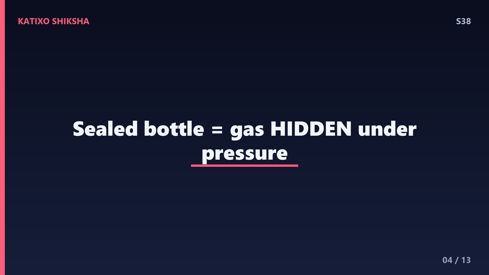
Slide 4जब बोतल बंद और सीलबंद होती है, तब उसके अंदर बहुत ऊँचा दबाव रहता है। इस high pressure की वजह से CO2 गैस आराम से पानी में घुली रहती है, बिलकुल छुपी हुई, बिना बुलबुले बनाए। इसे कहते हैं dissolved gas, यानी घुली हुई गैस। तुम बोतल को बाहर से देखो तो वो बिलकुल शांत दिखती है, कोई हलचल नहीं। पर अंदर असल में एक गैस की फौज इंतज़ार कर रही होती है, बस मौका मिलते ही बाहर भागने को तैयार। और वो मौका मिलता है जैसे ही तुम ढक्कन खोलते हो, दोस्तों!
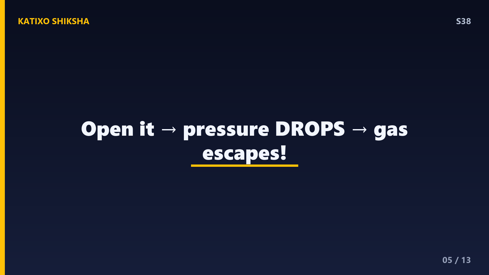
Slide 5अब आता है असली पल! जैसे ही तुम बोतल खोलते हो, छस्स की आवाज़ के साथ अंदर का दबाव अचानक गिर जाता है और बाहर की हवा के बराबर हो जाता है। अब pressure कम हो गया, तो Henry के नियम के हिसाब से पानी अब इतनी ज़्यादा गैस को घोलकर नहीं रख सकता। नतीजा? घुली हुई CO2 गैस तेज़ी से liquid छोड़कर बाहर निकलने लगती है, बुलबुले बनकर। यही वो छस्स वाली आवाज़ है, और यही है असली fizz! दोस्तों, बुलबुले प्रकट नहीं होते, वो तो पहले से अंदर थे, बस अब आज़ाद हो रहे हैं।
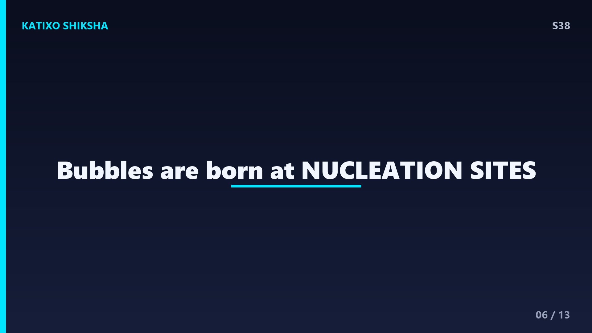
Slide 6अब एक मज़ेदार बात गौर करना दोस्तों, बुलबुले अक्सर glass के किसी खास हिस्से से ही उठते दिखते हैं, या किसी एक जगह से लाइन बनाकर। ऐसा क्यों? इसका कारण है nucleation sites, यानी बुलबुलों के जन्म लेने की जगहें। गैस को बुलबुला बनने के लिए एक छोटी सी खुरदरी जगह चाहिए, जैसे glass पर कोई scratch, धूल का कण, या कोई असमतल सतह। इन्हीं जगहों पर गैस इकट्ठा होकर बुलबुला बनाती है और ऊपर उठती है। बिलकुल साफ़, चिकनी सतह पर बुलबुले बनना मुश्किल होता है, क्योंकि उन्हें शुरू होने की जगह ही नहीं मिलती।
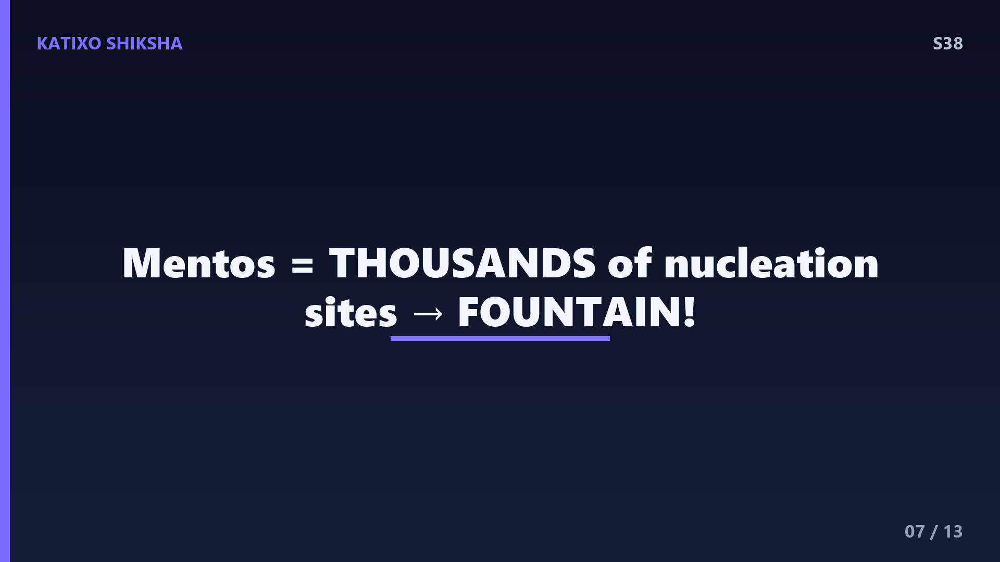
Slide 7अब एक बहुत famous experiment, Mentos और Diet Coke! जब तुम Mentos की गोली soda में डालते हो, तो एक ज़बरदस्त fountain फूट पड़ता है, झाग आसमान तक! क्यों? क्योंकि Mentos की सतह बहुत खुरदरी होती है, उस पर हज़ारों सूक्ष्म गड्ढे होते हैं। ये सारे गड्ढे एक साथ हज़ारों nucleation sites बन जाते हैं। नतीजा, soda में घुली CO2 गैस एक ही झटके में बहुत तेज़ी से बुलबुले बनाकर बाहर निकलती है। ध्यान रहे दोस्तों, ये कोई chemical reaction नहीं है, ये पूरी तरह physics है, बस गैस के बाहर निकलने की रफ़्तार बढ़ जाती है।
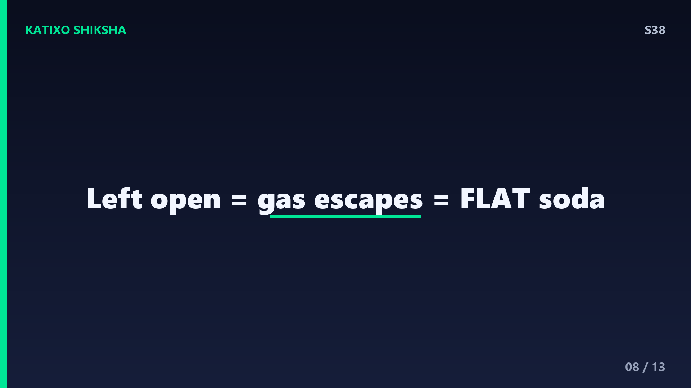
Slide 8अब समझो soda flat यानी फीकी क्यों हो जाती है। अगर तुम बोतल खुली छोड़ दो, तो धीरे-धीरे सारी CO2 गैस बाहर उड़ जाती है। थोड़ी देर बाद drink में कोई बुलबुला नहीं बचता, वो बेस्वाद और flat लगने लगती है। गर्मी इस process को और तेज़ कर देती है, क्योंकि गर्म पानी गैस को रोक नहीं पाता, इसीलिए गुनगुनी soda जल्दी फीकी हो जाती है। और दोस्तों, अगर तुम बोतल को हिलाते हो, तो गैस के बुलबुले अंदर ही जुड़ने लगते हैं, और खोलते ही बड़े धमाके के साथ बाहर फूटते हैं। इसीलिए हिलाई हुई बोतल कभी अचानक मत खोलना!
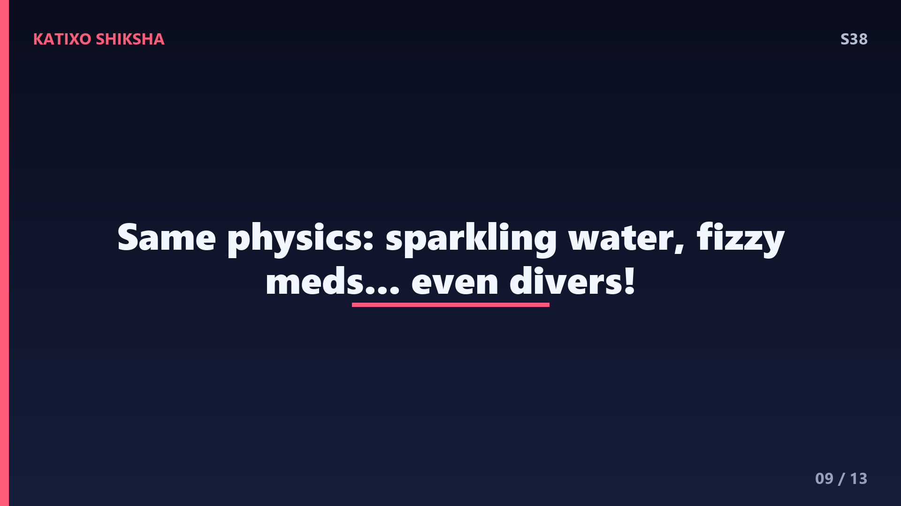
Slide 9ये fizz वाली science सिर्फ cold drinks तक सीमित नहीं है दोस्तों। यही principle काम करता है sparkling water, soda water और कई fizzy दवाओं में, जैसे वो गोलियाँ जो पानी में डालते ही बुलबुले छोड़ती हैं। यहाँ तक कि champagne और beer में भी यही CO2 का खेल है। और एक दिलचस्प बात, समुंदर में गहराई से ऊपर तेज़ी से आने वाले गोताखोरों को भी ऐसी ही समस्या होती है, जिसे कहते हैं the bends. उनके खून में घुली गैस दबाव कम होने पर बुलबुले बना देती है, बिलकुल soda की तरह! यही physics हर जगह मौजूद है।
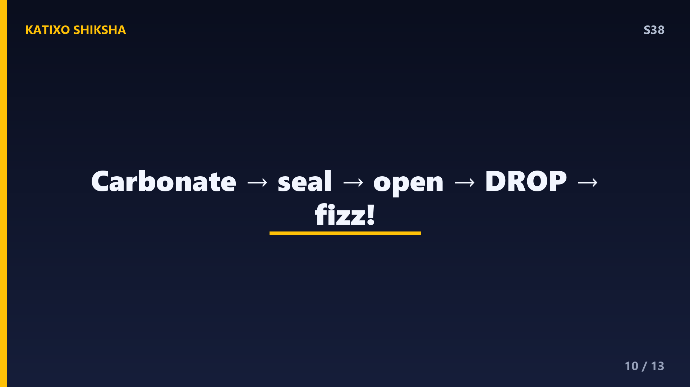
Slide 10तो चलो पूरी कहानी को एक साथ जोड़ें। Factory में high pressure और ठंडक की मदद से soda में CO2 गैस घोली जाती है, इसे कहते हैं carbonation. बंद बोतल में ऊँचा दबाव गैस को छुपाए रखता है। जैसे ही तुम बोतल खोलते हो, दबाव गिरता है, और गैस बुलबुले बनकर भागती है, खासकर nucleation sites से। यही है fizz! Mentos इन जगहों को बढ़ा देता है, इसलिए fountain बनता है, और खुली बोतल flat हो जाती है क्योंकि गैस उड़ जाती है। कितना मज़ेदार है ना, एक छस्स के पीछे इतनी सारी science! अब चलो test करते हैं।
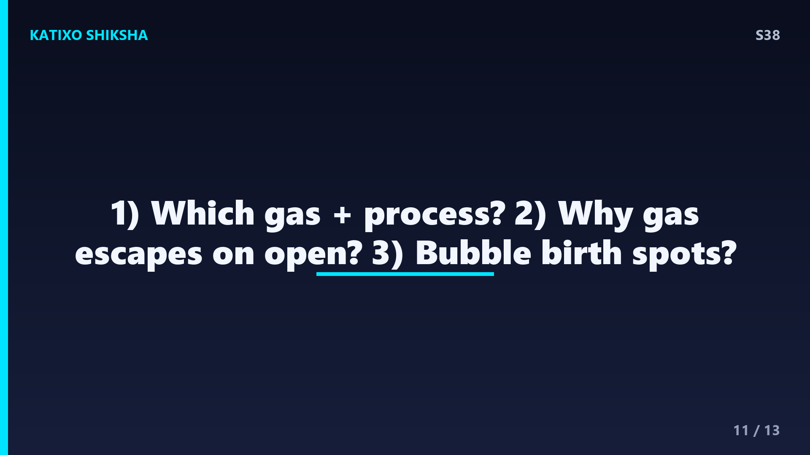
Slide 11Quick brain check! दोस्तों, तीन सवाल हैं, ध्यान से सोचो। पहला, soda में बुलबुले किस गैस के बनते हैं, और उस गैस को drink में घोलने की process को क्या कहते हैं? दूसरा, बोतल खोलते ही गैस बाहर क्यों भागती है, यानी अचानक क्या बदलता है? और तीसरा, glass में बुलबुले जिन खास खुरदरी जगहों से उठते हैं, उन्हें क्या कहते हैं? अब video pause करो, सोचो, और अपने जवाब मन में या copy में लिखो। तैयार हो? बहुत बढ़िया! चलो अगली slide पर सही जवाब देखते हैं।
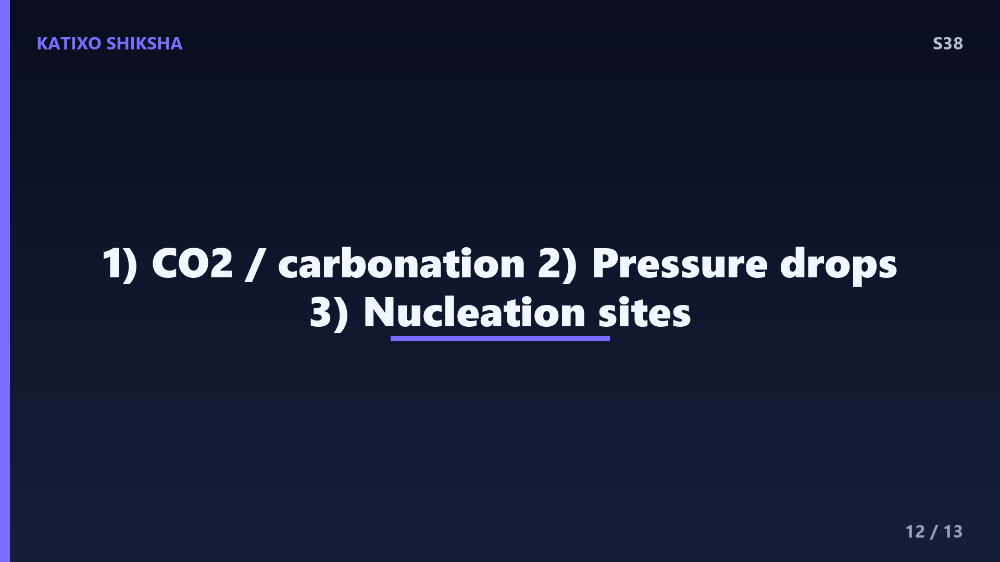
Slide 12तो दोस्तों, जवाब मिलाते हैं! पहला जवाब, soda के बुलबुले बनते हैं carbon dioxide यानी CO2 गैस से, और उसे घोलने की process को कहते हैं carbonation. दूसरा जवाब, बोतल खोलते ही अंदर का pressure यानी दबाव अचानक गिर जाता है, इसलिए पानी ज़्यादा गैस रोक नहीं पाता और वो बुलबुले बनकर बाहर निकलती है। और तीसरा जवाब, वो खुरदरी जगहें जहाँ से बुलबुले जन्म लेते हैं, उन्हें कहते हैं nucleation sites. अगर तीनों सही हुए, शाबाश दोस्तों! तुम तो असली science detective बन गए। चलो आख़िरी slide पर चलें।
Slide 13तो आज हमने सीखा, soda का fizz कोई जादू नहीं, बल्कि pressure और gas की शानदार science है। CO2 गैस high pressure में घोली जाती है, बोतल खोलने पर दबाव गिरता है, और गैस बुलबुले बनकर nucleation sites से बाहर भागती है। Mentos fountain, flat soda, सब इसी एक नियम से समझ आ जाता है। उम्मीद है दोस्तों, अब अगली बार छस्स सुनकर तुम मुस्कुराओगे, क्योंकि तुम्हें पूरी science पता है! अगले episode में हम जानेंगे एक ज़बरदस्त सवाल, vaccines हमारे शरीर को बीमारी से लड़ना कैसे सिखाते हैं? Subscribe करना मत भूलना! Bye!